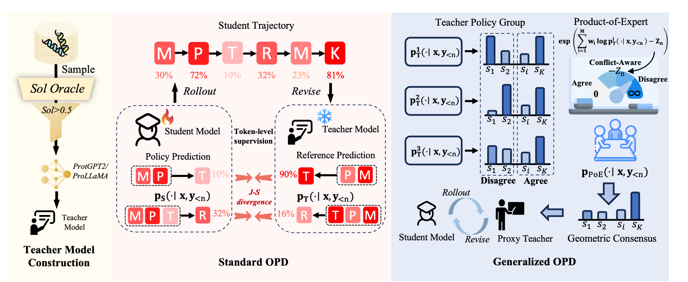
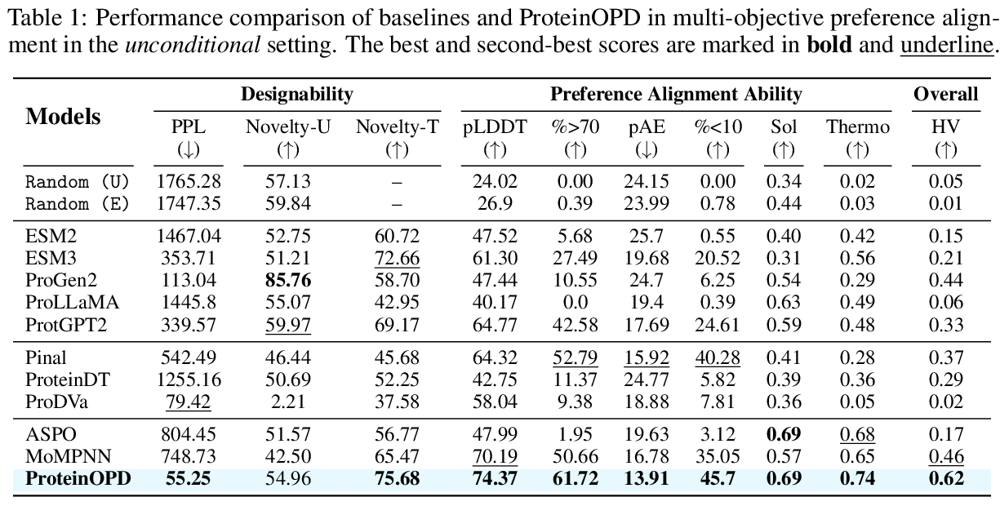
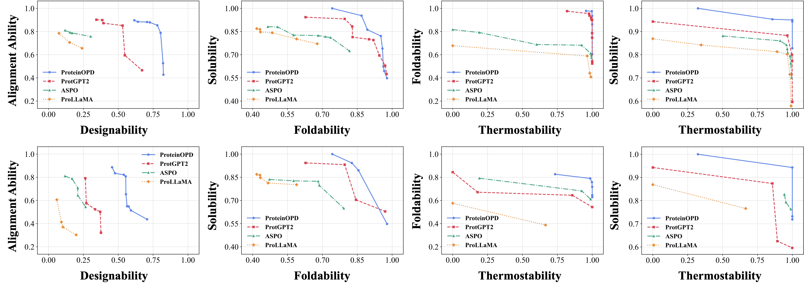
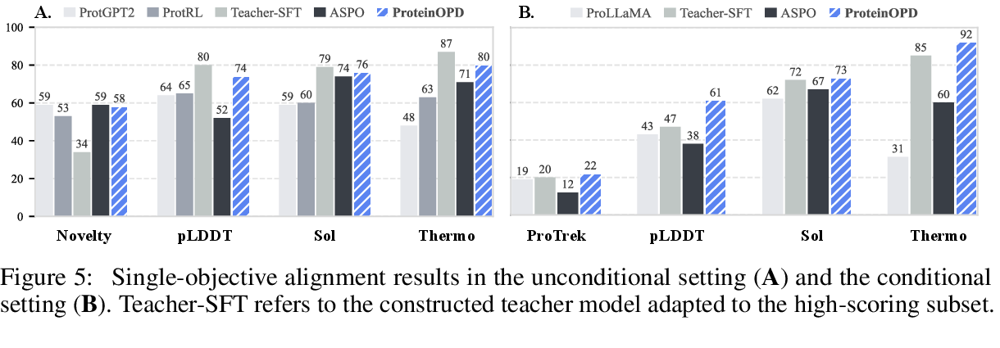
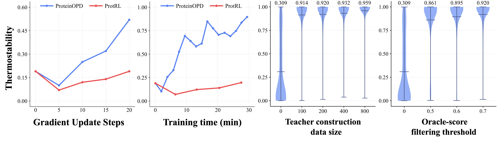
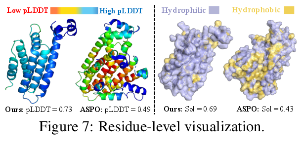

Multi-objective alignment
Optimizes foldability, solubility, and thermostability while keeping generated sequences plausible and novel.
Preference alignment for protein design
Towards Effective and Efficient Preference Alignment for Protein Design
A multi-objective on-policy distillation framework that aligns protein language models with competing design preferences while preserving the pretrained model's designability.

Contributions
Optimizes foldability, solubility, and thermostability while keeping generated sequences plausible and novel.
Extends on-policy distillation from single-teacher alignment to multi-teacher protein preference alignment.
Uses a normalized product-of-experts target to retain tokens supported by weighted preference teachers.
Delivers dense token-level supervision and reaches comparable thermostability about eight times faster than RL-based alignment.
Method
Sample protein sequences, score them with property-specific oracles, and adapt a pretrained PLM into specialized teachers with small filtered datasets.
Train the student on its own trajectories with dense token-level supervision from a preference-specific teacher.
Combine teachers through a normalized product-of-experts target and align the student to the geometric consensus.
Results





Resources
Citation
The public citation will be added after the non-anonymous version is available. For now, please refer to the arXiv record.
Open arXiv